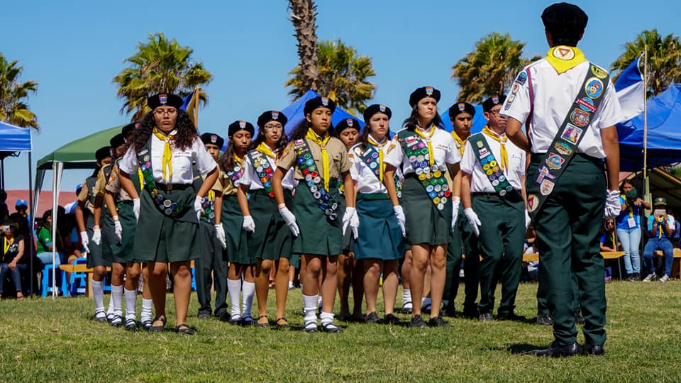
Desenvolvimento
Atividades que incentivam liderança, responsabilidade, disciplina e trabalho em equipe.
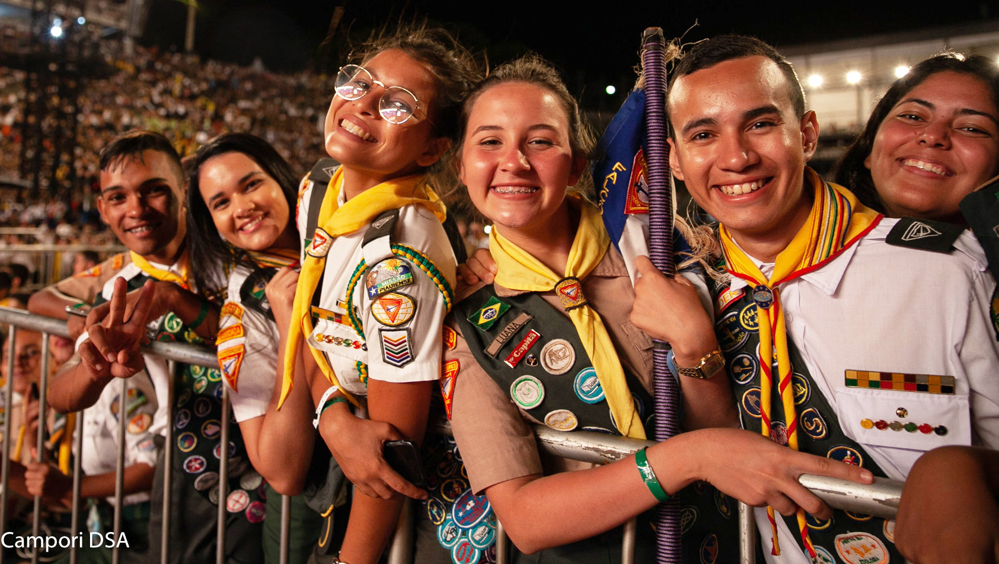
Clube de Desbravadores · Igreja Adventista do Sétimo Dia
Mais do que um clube, um movimento que transforma vidas, fortalece amizades e aproxima gerações de Cristo por meio da aventura, do serviço e da comunhão.
Objetivo Salvar do pecado e guiar no serviço.
O movimento
O Clube de Desbravadores é um ministério da Igreja Adventista do Sétimo Dia. No relato publicado por Notícias Adventistas em 2025, ele é descrito como um trabalho com meninos e meninas de 10 a 15 anos, em mais de 160 países, nas dimensões física, mental, emocional e espiritual.

Atividades que incentivam liderança, responsabilidade, disciplina e trabalho em equipe.
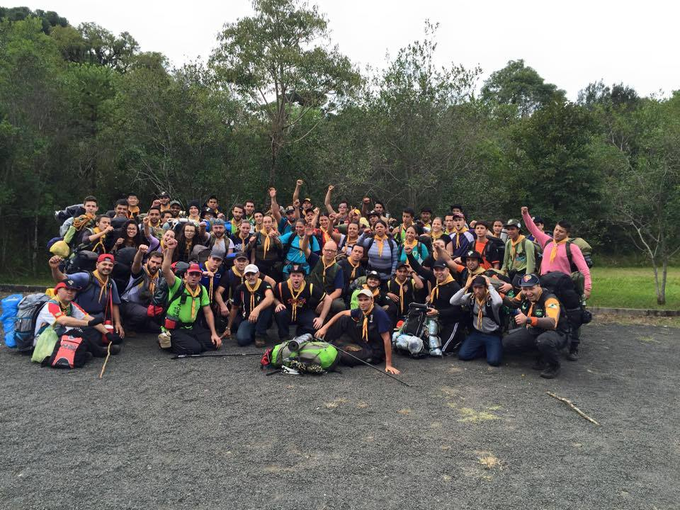
Acampamentos, trilhas, especialidades, orientação, sobrevivência e contato com a natureza.
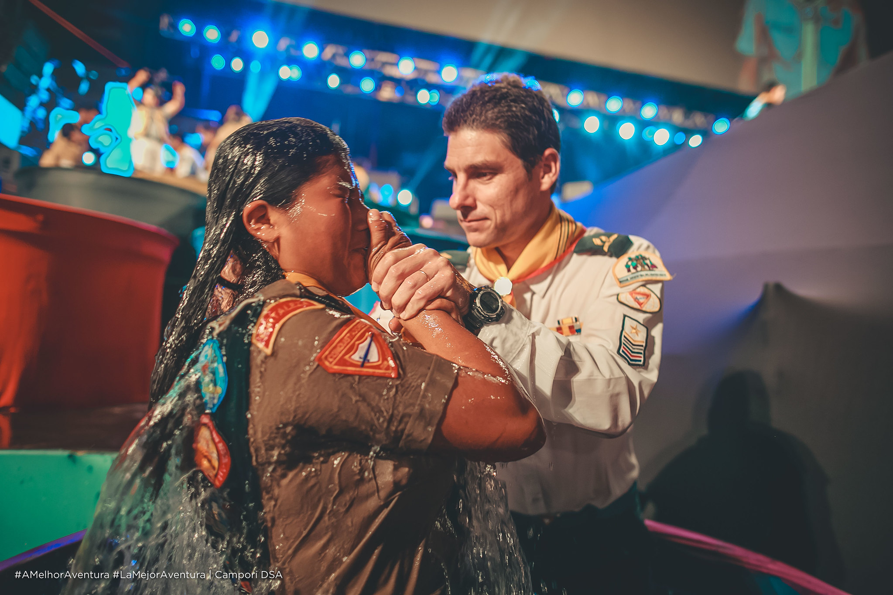
Estudo da Bíblia, projetos comunitários, ações solidárias e dedicação a Deus e ao próximo.
Arquivo
A linha do tempo segue a página de origem histórica dos Desbravadores da Divisão Sul-Americana, escrita por Alberto Souza e publicada em 18 de dezembro de 2017. As fotos são evocativas.
O Clube de Desbravadores foi oficializado em nível mundial em 1950, pela Associação Geral da Igreja Adventista do Sétimo Dia. Onde o inglês usava Pathfinder Club, cada região adotou um nome compreensível na própria língua. No Brasil, Desbravadores. Nos países de fala hispana, Conquistadores. Os símbolos e o programa permaneceram os mesmos.
Em 23 de setembro de 1951 houve uma feira em Dinuba, na Califórnia. Em 1954, a ideia de campori foi introduzida em Idyllwild, no sudeste da Califórnia, coordenada por Charles Martin, líder de jovens da associação local, e por seu associado Harry Garlick. Já tinham existido acampamentos com mais de um clube. O formato e o nome de campori entram nesse momento.
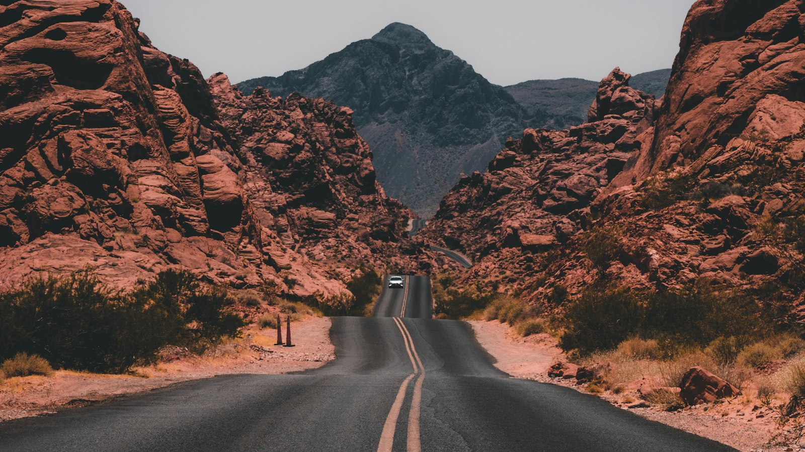
O primeiro clube sul-americano começou em Lima, no Peru, sob a liderança do casal Nercida e Armando Ruiz. No início de 1955, o diretor departamental dos Missionários Voluntários da União Incaica, hoje União Peruana do Sul, e o pastor Donald J. Von Pohle apresentaram o clube organizado nos Estados Unidos. Com os dirigentes da igreja de Miraflores, escolheram o nome Conquistadores. Em 4 de abril de 1955, com as classes MV, foi organizado o clube daquela igreja.
A primeira diretora foi Nercida de Ruiz. Os conselheiros fundadores foram Armando Ruiz, Segundo Guerra, Enrique Velasco, Lorenzo Ruiz, Josefa Rojas, Carmen Villalobos, F. de Ruf e J. de Phill. Entre os integrantes fundadores estão Edwin Montenegro, Edith Ruiz, Esther Gálvez, Nira Ruiz e Raúl Carrillo. No segundo ano, o clube levou dez Desbravadores ao batismo por meio da classe bíblica.
No fim da década de 1950, o pastor Jairo Tavares de Araújo, líder da juventude da Divisão Sul-Americana, com a sede ainda no Uruguai, preparou um pequeno manual de como organizar um clube. Esse material incentivou clubes em Santa Catarina, São Paulo, Rio de Janeiro e Rio Grande do Sul. O texto situa em 1959 o nascimento dos primeiros clubes do Brasil, em Santa Catarina e em São Paulo.
Em 1958, o pastor Henry R. Feyerabend veio do Canadá para Santa Catarina como departamental de jovens. Levou material em inglês e visitou as igrejas falando do clube. Do início de 1959 a 1960 fundou sete clubes. O primeiro foi o Vigilantes, de Lajeado Baixo, e o primeiro diretor foi Haroldo Fuckner. Em Ribeirão Preto, a primeira reunião oficial foi num domingo de manhã, no pátio da antiga igreja central. Inscreveram-se 23 juvenis no clube Pioneiros, cujo primeiro diretor foi Luiz Roberto Freitas. Em 1961, o pastor Wilson Sarli, departamental MV de São Paulo, levou a Ribeirão Preto o lenço, as insígnias, o voto e a lei, e oficializou o clube.
Em dezembro de 1975, a Revista Adventista noticiou um campori pela primeira vez. Mais de 300 Desbravadores estiveram sob a liderança dos pastores José Maria Barbosa e Jason MacCraken.
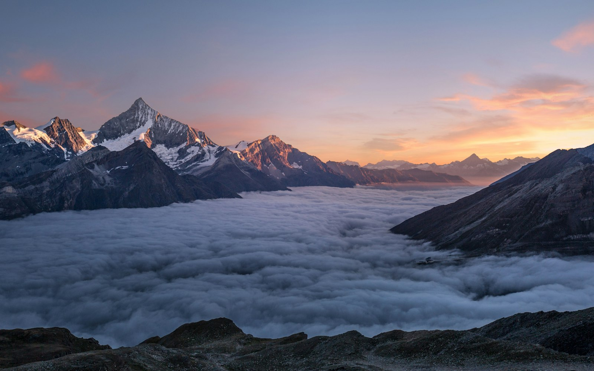
A página de origem histórica fecha a fase pioneira no I Campori da Divisão Sul-Americana, organizado pelo pastor Cláudio Belz, em Foz do Iguaçu, Paraná, de 28 de dezembro de 1983 a 4 de janeiro de 1984. A mesma página ilustra, adiante, o IV Campori, de 2014, e o V, de 2019. O relato de cada edição está na seção Camporis.
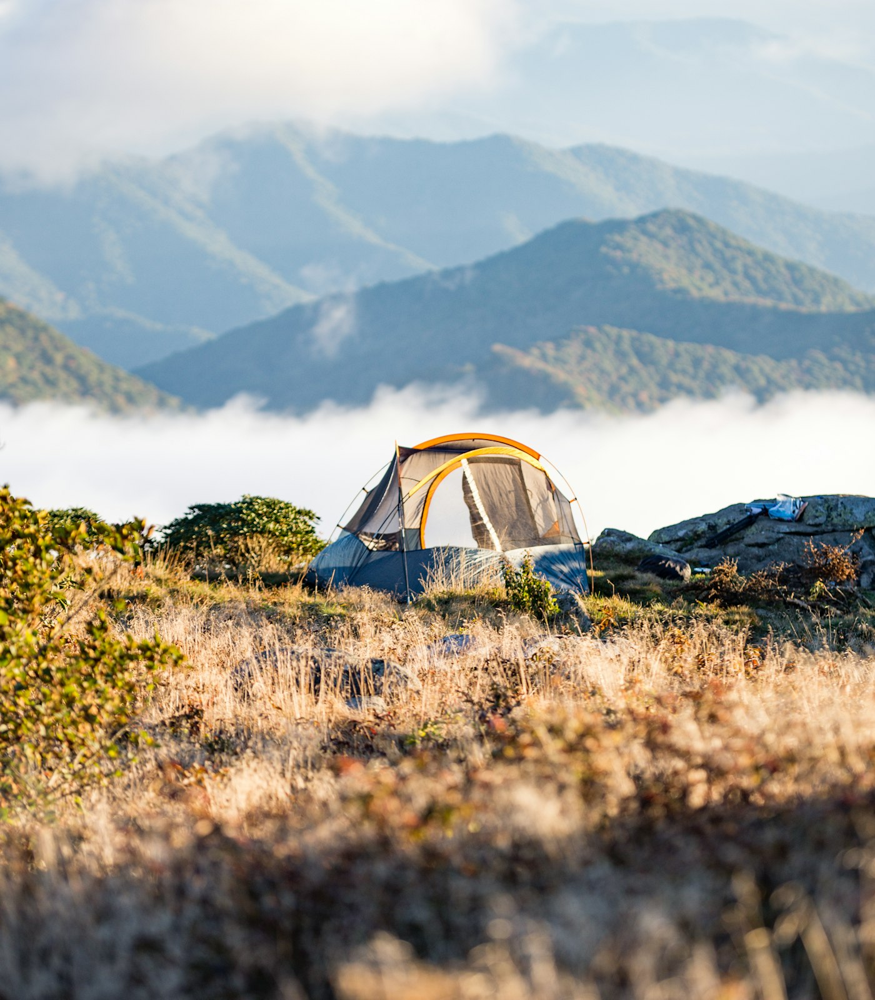
Divisão Sul-Americana
Milhares de Desbravadores, uma só missão. Os Camporis são encontros marcados pela fé, amizade, superação e experiências que permanecem na memória de quem participa.
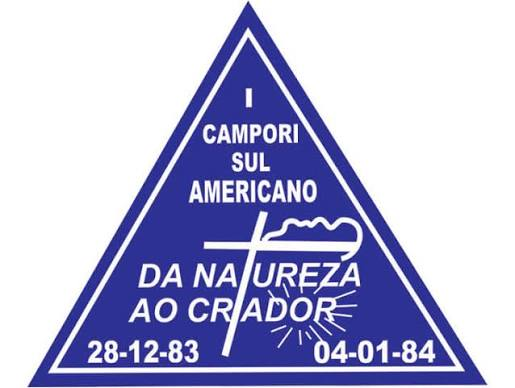
Foz do Iguaçu, Paraná, Brasil
Tema: Da Natureza ao Criador
O primeiro campori da Divisão Sul-Americana reuniu Desbravadores em Foz do Iguaçu, na virada de 1983 para 1984.
Conhecer a história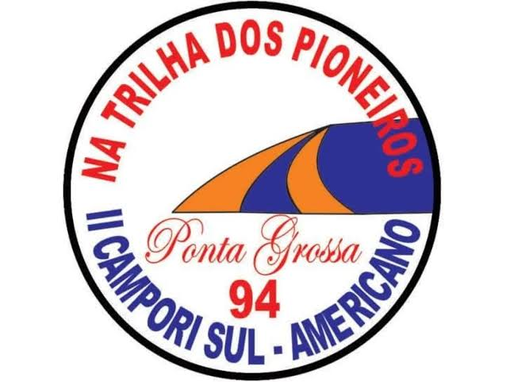
Ponta Grossa, Paraná, Brasil
Tema: Na trilha dos Pioneiros
O segundo campori da Divisão foi em Ponta Grossa, Paraná, de 10 a 16 de janeiro de 1994.
Conhecer a história
Santa Helena, Paraná, Brasil
Tema: Fonte de Esperança
O terceiro encontro da Divisão é localizado, pela cobertura do campori seguinte, em Santa Helena, Paraná, em janeiro de 2005.
Conhecer a história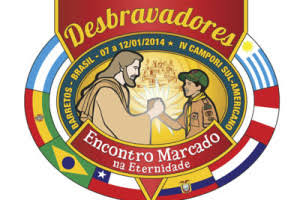
Parque do Peão, Barretos, São Paulo, Brasil
Tema: Encontro Marcado na Eternidade
Em janeiro de 2014, Barretos recebeu pela primeira vez o Campori da Divisão, com o tema Encontro Marcado na Eternidade.
Conhecer a história
Parque do Peão, Barretos, São Paulo, Brasil
Tema: A melhor aventura
Em 2019 o V Campori voltou a Barretos com o tema A melhor aventura e, pela primeira vez na série, em duas edições: Alpha e Ômega.
Conhecer a história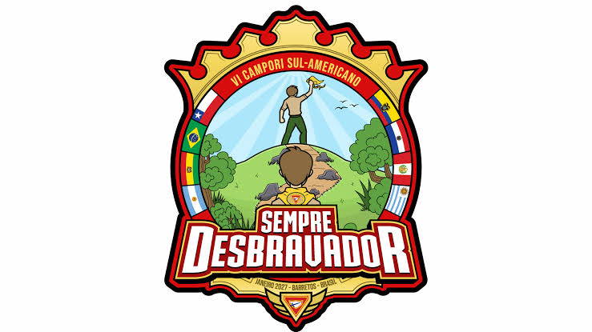
Parque do Peão, Barretos, São Paulo, Brasil
Tema: Sempre Desbravador
O VI Campori está marcado para janeiro de 2027, de novo em Barretos, com o tema Sempre Desbravador. Ainda não aconteceu.
Conhecer a históriaNenhum campori com esse período e esse país anfitrião. As edições confirmadas até aqui foram realizadas no Brasil.
Identidade
O voto, a lei, o alvo e o objetivo do clube estão publicados pela Igreja. Estes seis cartões resumem o jeito de viver que o movimento pede.
Colocar Cristo no centro das decisões e da vida.
Ser fiel a Deus, à família, à igreja e aos princípios do clube.
Desenvolver responsabilidade, organização e respeito.
Ajudar o próximo e contribuir com a comunidade.
Aprender a liderar servindo e trabalhar em equipe.
Descobrir, explorar, aprender e superar desafios com responsabilidade.
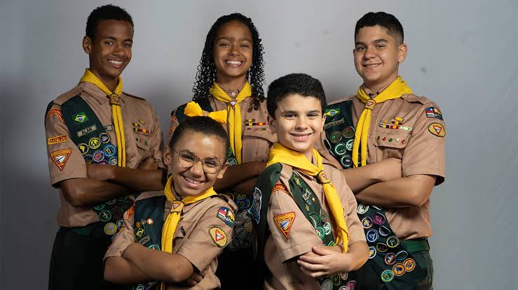
Convite
Uma jornada de fé, amizade, aprendizado e aventura espera por você. Descubra o movimento dos Desbravadores e encontre um clube perto de sua comunidade.
Quero conhecer um clube (abre em nova aba)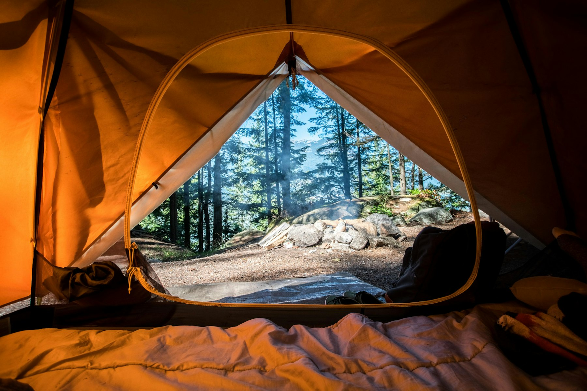
Acampamentos
Imagem ilustrativa de natureza ou acampamento, na licença do Unsplash. Não é fotografia de um Campori, de um clube ou do uniforme.
Fechar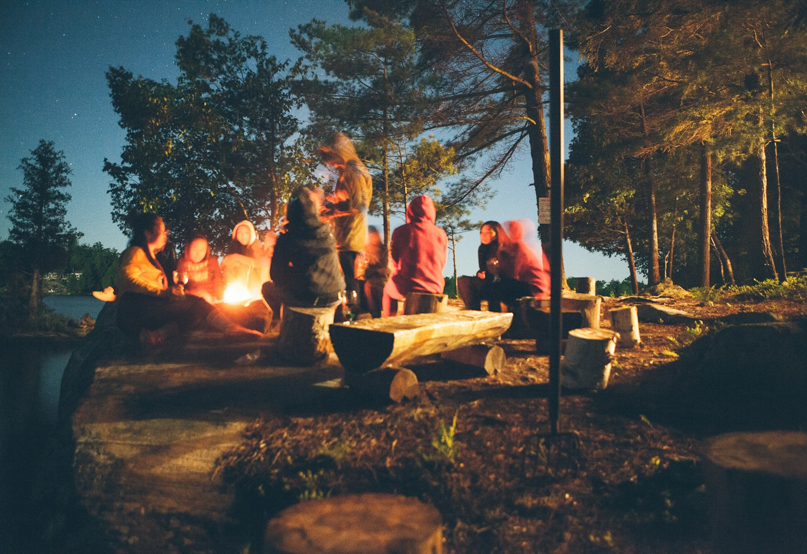
Amizade ao redor do fogo
Imagem ilustrativa de natureza ou acampamento, na licença do Unsplash. Não é fotografia de um Campori, de um clube ou do uniforme.
Fechar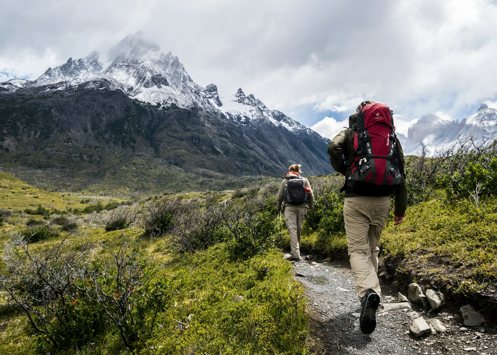
Trilhas
Imagem ilustrativa de natureza ou acampamento, na licença do Unsplash. Não é fotografia de um Campori, de um clube ou do uniforme.
Fechar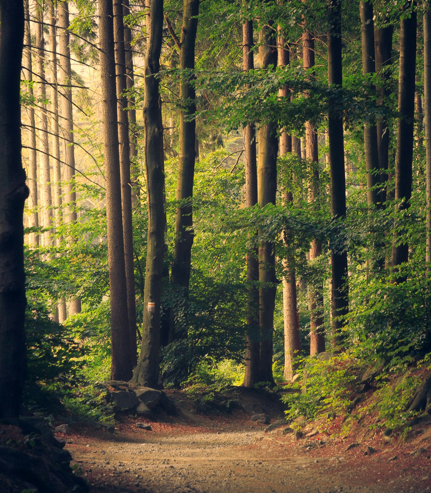
Natureza
Imagem ilustrativa de natureza ou acampamento, na licença do Unsplash. Não é fotografia de um Campori, de um clube ou do uniforme.
Fechar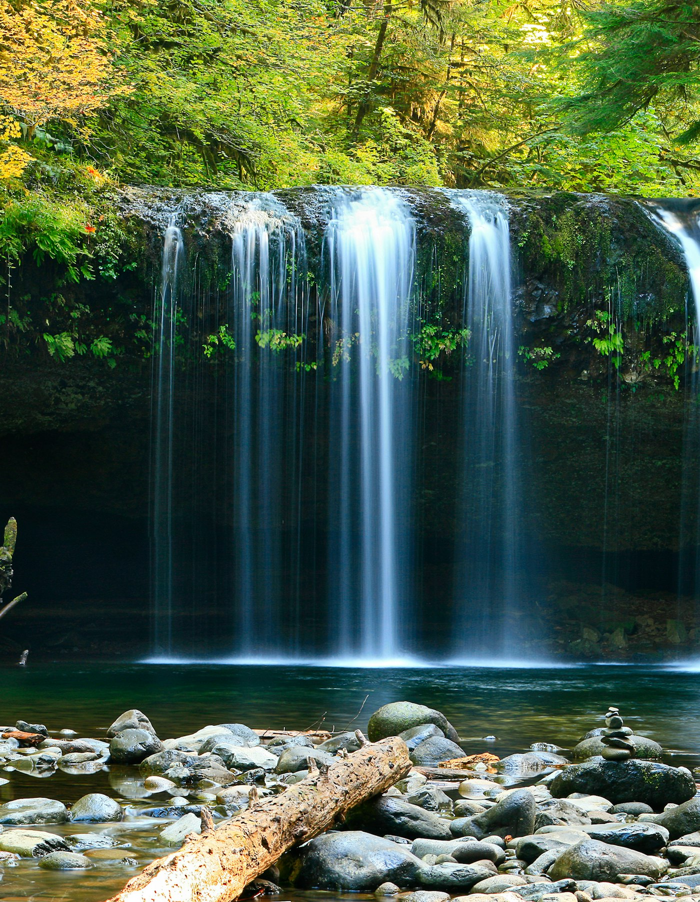
Natureza
Imagem ilustrativa de natureza ou acampamento, na licença do Unsplash. Não é fotografia de um Campori, de um clube ou do uniforme.
Fechar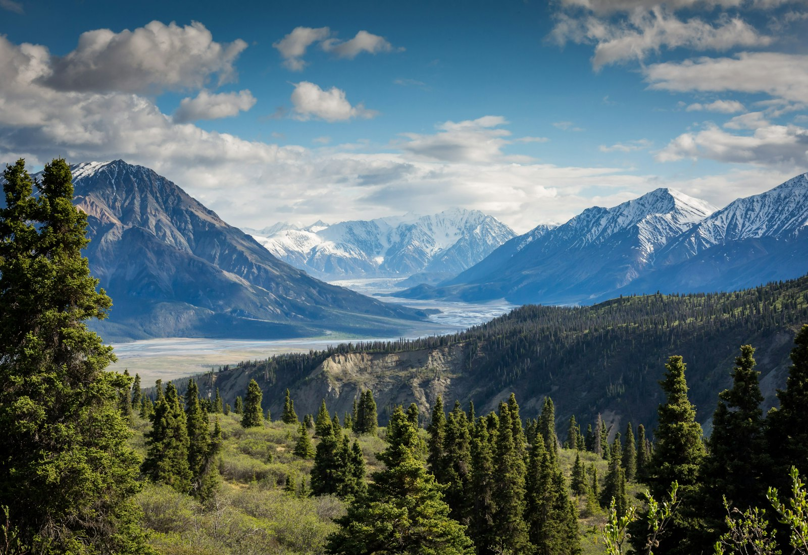
Montanhas
Imagem ilustrativa de natureza ou acampamento, na licença do Unsplash. Não é fotografia de um Campori, de um clube ou do uniforme.
FecharAcampamentos
Imagem ilustrativa de natureza ou acampamento, na licença do Unsplash. Não é fotografia de um Campori, de um clube ou do uniforme.
Fechar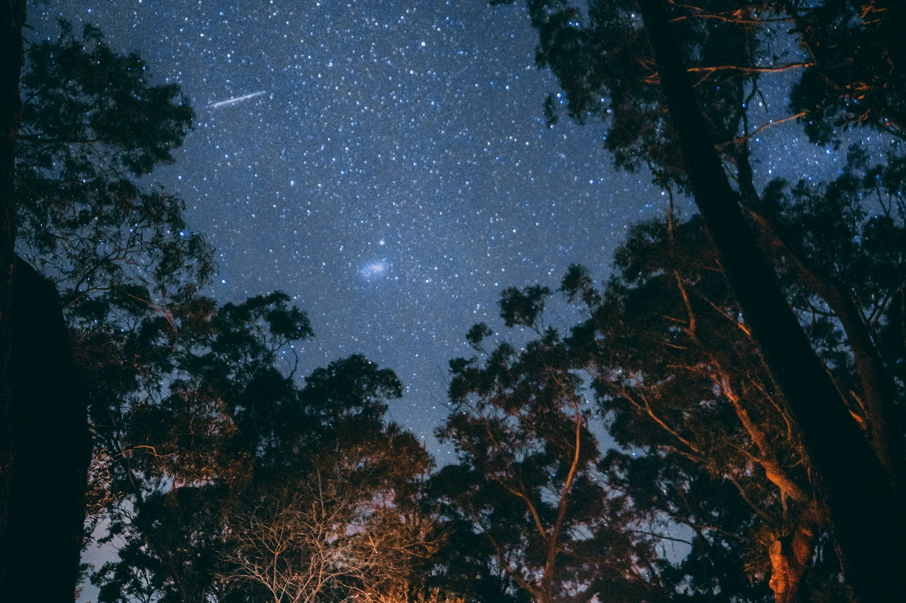
Noite de acampamento
Imagem ilustrativa de natureza ou acampamento, na licença do Unsplash. Não é fotografia de um Campori, de um clube ou do uniforme.
Fechar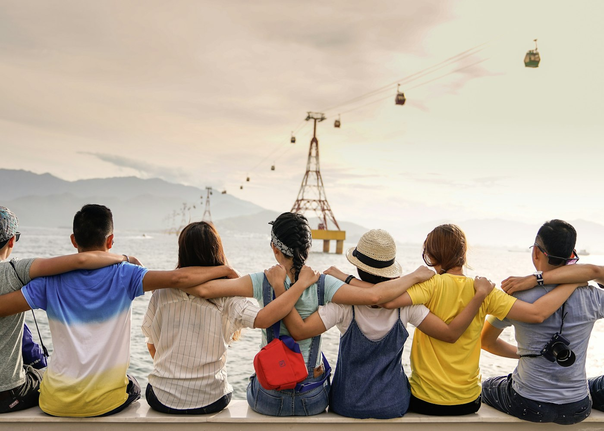
Amizade
Imagem ilustrativa de natureza ou acampamento, na licença do Unsplash. Não é fotografia de um Campori, de um clube ou do uniforme.
Fechar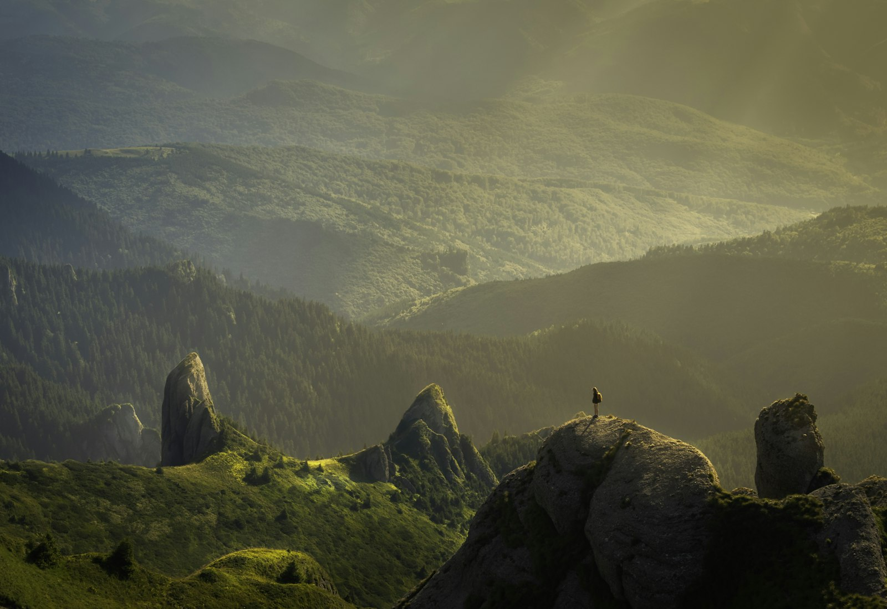
Exploração
Imagem ilustrativa de natureza ou acampamento, na licença do Unsplash. Não é fotografia de um Campori, de um clube ou do uniforme.
FecharHorizonte
Imagem ilustrativa de natureza ou acampamento, na licença do Unsplash. Não é fotografia de um Campori, de um clube ou do uniforme.
FecharCaminho
Imagem ilustrativa de natureza ou acampamento, na licença do Unsplash. Não é fotografia de um Campori, de um clube ou do uniforme.
Fechar